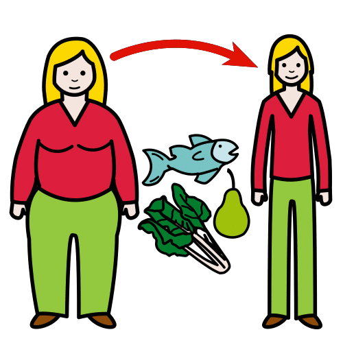

Definición: Dibujo esquemático y simple de un terreno, un edificio, un mapa o una localización.
Ejemplo: Gracias al croquis que hicimos del parque de aventuras pudimos llegar a todas las atracciones.
Gasto calorico
Definición: Relación entre la energía que consumes y la que necesita tu cuerpo.
Ejemplo: Si corremos todos los días, tendremos más gasto calórico.
En los apartados anteriores has recordado que los objetos tienen distancia (longitud) y peso (masa). También has recordado que podemos medir el tiempo. Ahora vamos a profundizar y ver nuevos contenidos. Te cuento:
Aprenderás a trabajar con las Unidades del Sistema Métrico Decimal: Unidades de longitud y de masa. Expresión de forma simple y compleja.
Veréis la medida de tiempo: horas, minutos y segundos. Sus unidades y conversión.
Conoceréis qué es el gasto calórico, así como la relación entre alimentación, ejercicio y gasto calórico.